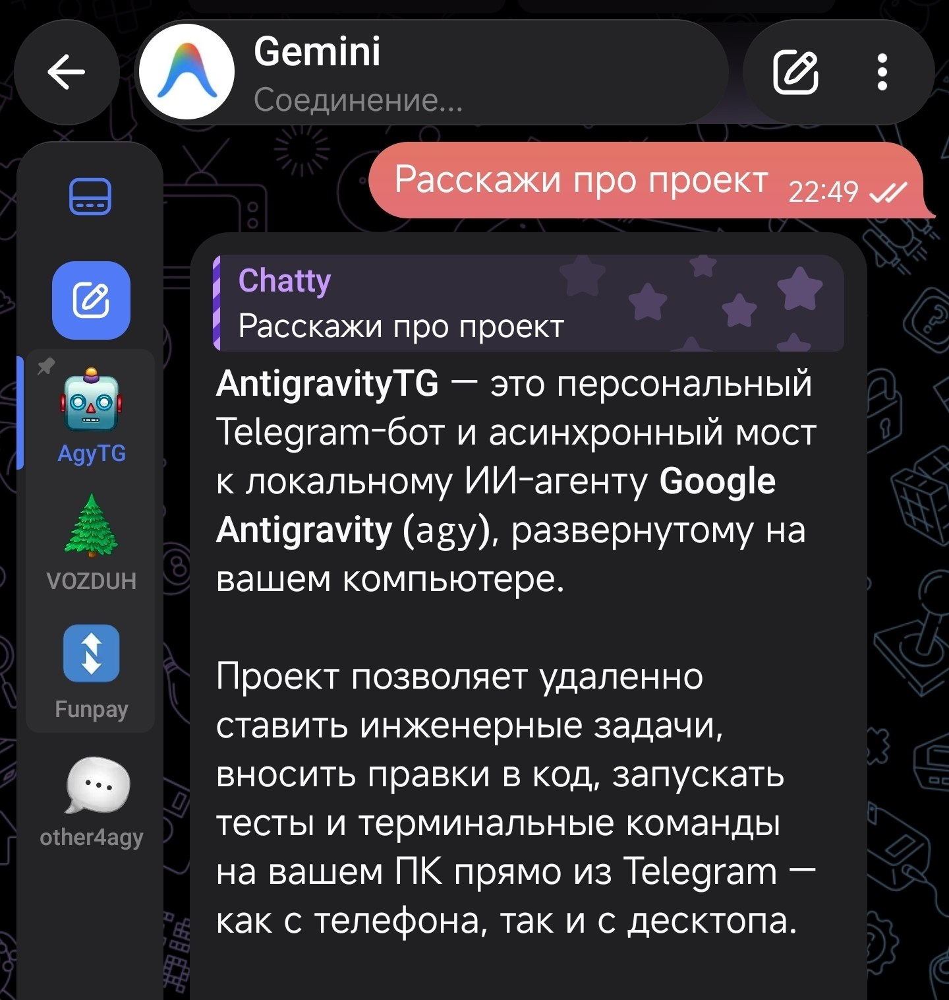

Персональная серверная система мониторинга и удаленного администрирования рабочего ПК через Telegram. Защищенный IPC-шлюз, мгновенные скриншоты нескольких дисплеев, управление электропитанием, запуск консольных скриптов и обмен файлами с телефона без белого IP и проброса портов.

Захват всех активных мониторов с автоматической оптимизацией размера файла и быстрой доставкой фотографии в чат Telegram для визуального контроля запущенных рендеров или фоновых задач.
Исполнение консольных инструкций в изолированном асинхронном потоке с возвратом форматированного вывода (stdout/stderr) и поддержкой таймаутов от зависаний.
Команды перевода ПК в спящий режим, гибернацию, перезагрузку или экстренное отключение, а также блокировка рабочего стола при удалении от компьютера.
Возможность отправить документ со смартфона напрямую на рабочий стол или запросить выгрузку логов и файлов из любых папок файловой системы.
Строгая фильтрация входящих сообщений по списку доверенных Telegram ID (whitelist), блокировка спама и полное игнорирование неавторизованных пользователей.
Архитектура построена на асинхронном event loop (Python 3.12 + Aiogram 3) с прямыми вызовами Windows API через ctypes. Бот использует исходящий TLS long-polling к серверам Telegram, что полностью устраняет необходимость открывать порты в брандмауэре или арендовать статический IP-адрес.